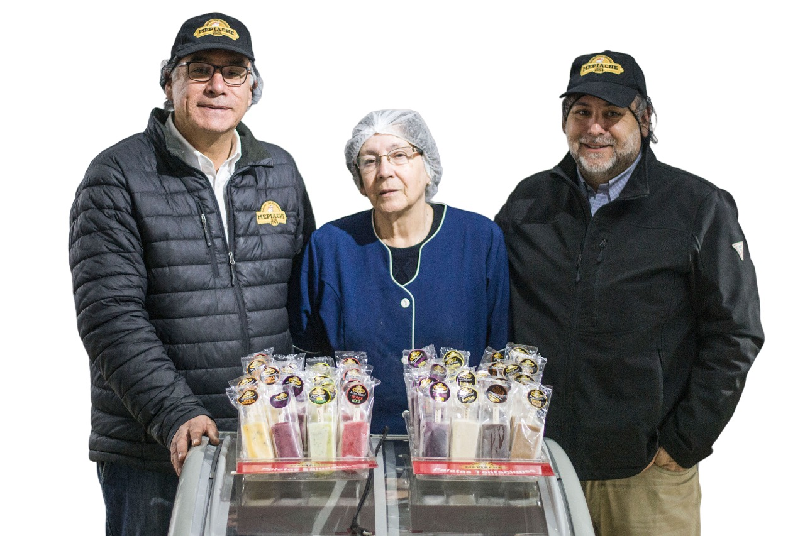
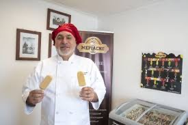
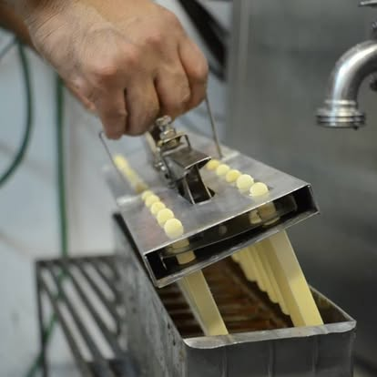
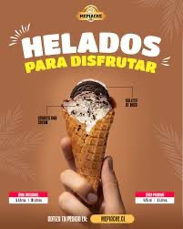

Una heladería familiar de San Joaquín que ha sobrevivido al tiempo, a los cambios del barrio y a las generaciones. Siguen aquí, haciendo helados.
Antes de llamarse Mepiache, esta historia tuvo otro nombre. En la década del cincuenta, cuando San Joaquín todavía tenía otro ritmo y los negocios de barrio eran parte de la vida cotidiana, una familia comenzó a hacer helados bajo el nombre San-Val. No era todavía una marca conocida. Era una fábrica familiar, levantada con oficio, trabajo y una idea simple: hacer helados que la gente quisiera volver a probar.
Detrás de ese comienzo hay nombres: Rosa Duvernet, Manuel e Hilda San Martín, René Valdebenito. Personas que pusieron manos, tiempo y oficio para construir algo que con los años se volvería parte de la memoria del barrio.

En la década de 1950, cuando San Joaquín tenía otro ritmo y los negocios de barrio eran parte de la vida cotidiana, una familia comenzó a hacer helados bajo el nombre San-Val. No había grandes discursos sobre lo artesanal: simplemente se hacía así. Se trabajaba a mano, con una especie de remo que en la familia llamaban la «espátula mágica», usada para despegar el helado de los estanques. El producto se guardaba en baldes de acero inoxidable de diez litros.
Era un trabajo físico, paciente, hecho a ojo y con experiencia. Detrás estaban Rosa Duvernet, Manuel e Hilda San Martín y René Valdebenito —personas que pusieron manos y años para construir algo que con el tiempo se volvería parte de la memoria del barrio.

El nombre Mepiache nació inspirado en la expresión italiana «me piace», que significa «me gusta». Pero en Chile tomó su propia forma: más simple, más de barrio, más nuestra. Así, el nombre terminó diciendo exactamente lo que la marca quería provocar: ese pequeño gusto de volver a probar algo conocido y querido.
Con el tiempo llegaron los productos que muchos recuerdan por nombre propio: Chocolitos, Crocantes, Creminos, paletas artesanales, sustancias tradicionales y barquillos de invierno. Cada nueva generación —Ángela Caro, luego Carlos y David San Martín— aprendió no solo a hacer helados, sino a entender lo que significa mantener viva una tradición. Eso no se improvisa; se cuida.

Hay negocios que funcionan en un barrio, y hay otros que terminan siendo parte del barrio. Mepiache pertenece a esa segunda categoría. Durante décadas, vecinos, familias y antiguos clientes han vuelto por los mismos sabores, aunque ya no vivan cerca. Algunos llegaron de niños; hoy vuelven con sus hijos, o con sus nietos. En esa repetición sencilla —volver, comprar, recordar— también se construye una historia.
Hoy Mepiache continúa en San Joaquín con el mismo oficio de 1954. Han crecido los productos y las líneas, pero el criterio es el mismo: familiar, artesanal, de barrio y sostenido por generaciones. Lo artesanal, para Mepiache, no fue una moda. Fue la forma en que todo empezó.

El local, las personas, el proceso. Una historia contada también en fotos.


Mepiache ha sido descrita como una de las heladerías más antiguas de Santiago. Aquí, algunos de esos registros.

Mepiache en las noticias
Reportaje sobre la historia y tradición artesanal de Mepiache.

Mepiache en los medios
Otra aparición en prensa sobre la fábrica y tradición de Mepiache.
Paletas artesanales, helados en distintos formatos, sustancias tradicionales. Cada producto tiene detrás el mismo criterio que tiene la marca desde 1954: familiar, artesanal, sin atajos.